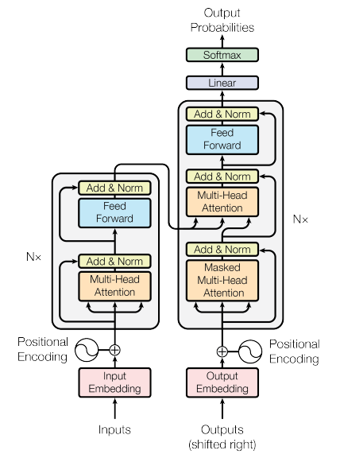
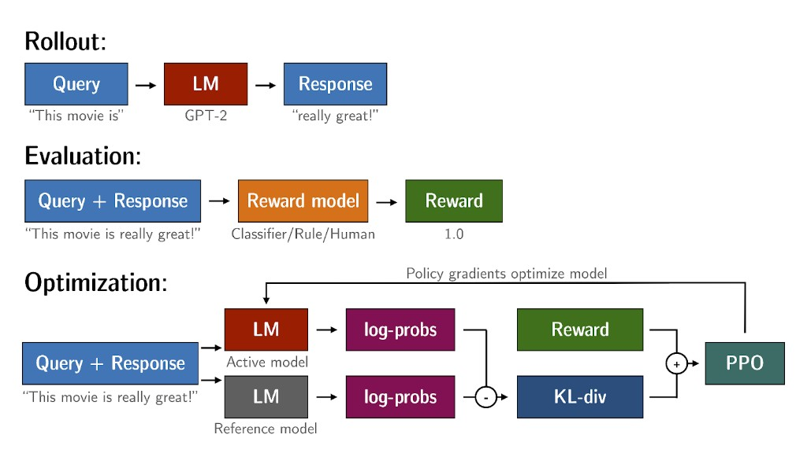
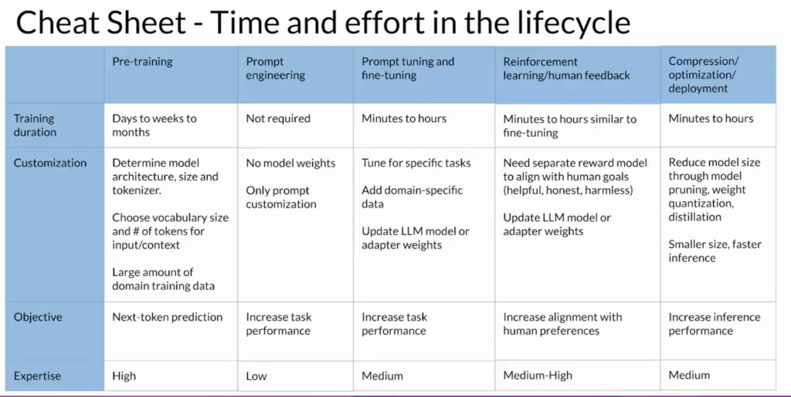

What large language models are, how you interact with them, what they can do, and why the transformer architecture made it all possible.
1 · The Big Picture
🌐 LLMs as a General-Purpose Technology
Large language models (LLMs) are not just a tool for end users — they are a powerful developer tool. Applications that once took months to build can now be assembled in days or a few weeks.
Generative AI and LLMs are a general-purpose technology. Like deep learning or electricity, they are useful not for a single application but across many corners of the economy. Much like the rise of deep learning ~15 years ago, there is years of work ahead to identify use cases and build specific applications.
A small model fine-tuned for one task can rival a giant model on that task. Bigger is not always necessary — model sizing is a real design decision.
2 · What Is Generative AI?
🧠 A Subset of Machine Learning
Generative AI is a subset of traditional machine learning. The models underpinning it learned their abilities by finding statistical patterns in massive datasets of human-generated content.
LLMs are trained on trillions of words over weeks and months, using large amounts of compute.
These are called foundation models (or base models), with billions of parameters.
They exhibit emergent properties beyond language alone — breaking down complex tasks, reasoning, and problem solving.
Think of parameters as the model's memory. More parameters → more memory → the more sophisticated the tasks it can perform.
3 · Prompts, Completions & Inference
💬 How You Talk to a Model
Interacting with an LLM is different from traditional programming. Instead of writing formalized code against libraries and APIs, you give the model natural-language instructions and it performs the task much as a human would.
Core Vocabulary
prompt — the text you pass to the model. context window — the memory available for the prompt (typically a few thousand words; varies by model). inference — the act of using the model to generate text. completion — the output: the original prompt followed by the generated text.
Example: ask "Where is Ganymede located in the solar system?" The prompt is passed to the model, which predicts the next words. Because the prompt contained a question, the model generates an answer — correctly identifying Ganymede as a moon of Jupiter, located within Jupiter's orbit.
4 · Use Cases
🛠️ Beyond Chatbots
Chatbots are the most visible use, but next-word prediction is the base concept behind many capabilities within text generation.
Essay writing
Generate long-form text from a short prompt.
Summarization
Provide a dialogue or document and get a concise summary.
Translation
Between human languages (e.g. French ↔ German) or natural language → machine code.
Code generation
e.g. "return the mean of every column in a DataFrame" → runnable Python.
Information retrieval
Named entity recognition — extract people and places from an article (word classification).
Augmentation
Connect to external data sources or invoke external APIs to power real-world interactions.
As foundation models scale from hundreds of millions to hundreds of billions of parameters, their subjective understanding of language grows — yet smaller models can be fine-tuned to excel at specific, focused tasks.
5 · Choosing Model Size
⚖️ Giant vs. Small Models
Giant models (100B+ params)
Broad, general world knowledge — history, philosophy, coding, and more.
Generalize across many different tasks.
Best when comprehensiveness matters.
Smaller models (sub-1B to ~30B)
Great for a single, optimized use case (e.g. dialogue summarization, one company's customer-service agent).
Can achieve similar or very good results at lower cost.
Surprisingly capable when fine-tuned.
6 · Before Transformers: RNNs
🔁 Why RNNs Fell Short
Generative algorithms are not new. Earlier language models used recurrent neural networks (RNNs). Powerful for their time, they were limited by the compute and memory needed for generative tasks.
With only a few previous words seen, next-word prediction is poor.
Scaling an RNN to see more preceding words requires significantly more resources.
Even scaled up, the model often still hasn't seen enough input to predict well.
To predict the next word well, a model must understand the whole sentence or document, not just the previous few words — and language is hard:
Homonyms: one word, multiple meanings — only context reveals which kind of "bank" is meant.
Syntactic ambiguity: "The teacher taught the students with the book." Did the teacher use the book, did the students have it, or both?
7 · The Transformer Revolution
⚡ Attention Is All You Need
In 2017, the paper Attention Is All You Need (Google & the University of Toronto) changed everything. The transformer architecture unlocked the progress in generative AI we see today.
Scales efficiently across multi-core GPUs.
Parallel-processes input data, enabling much larger training datasets.
Learns to pay attention to the meaning of the words it processes.
Key intuitions covered in depth: self-attention and the multi-headed self-attention mechanism — how the model gains an understanding of language. A major reason transformers took off is that attention could run in a massively parallel way, fitting modern GPUs and scaling up.
The same transformer foundation now powers vision transformers and other modalities — making it a critical building block far beyond text.
8 · Self-Attention in Depth
🔗 Relevance Across the Whole Sentence
The power of the transformer is its ability to learn the relevance and context of all words in a sentence — not just each word relative to its neighbor, but to every other word, no matter where they sit in the input.
The model applies attention weights to these relationships, learning how relevant each word is to every other word. For "The teacher taught the students with the book", this lets the algorithm learn who has the book, who could have it, and whether it's even relevant to the wider document.
Attention weights are learned during training.
An attention map visualizes the weights between each word and every other word.
In a stylized example, book attends strongly to both teacher and student.
Learning attention this way across the whole input — called self-attention — significantly improves the model's ability to encode language.
9 · Inside the Transformer
🏗️ Encoder, Decoder & the Data Flow
The architecture (from the original Attention Is All You Need paper) splits into two parts — the encoder and the decoder — which share many similarities and work together. By convention, inputs sit at the bottom, outputs at the top.

The transformer architecture — encoder (left) and decoder (right). Inputs enter at the bottom; output probabilities exit through the final linear + softmax at the top. (After Vaswani et al., Attention Is All You Need, 2017.)
Machine-learning models are big statistical calculators: they work with numbers, not words. The data flows through these stages:
Tokenization: convert words into numbers (token IDs), each pointing to a position in the model's vocabulary. Tokens may map to whole words or parts of words. You must use the same tokenizer for training and generation.
Embedding layer: a trainable, high-dimensional vector space where each token ID maps to a vector encoding its meaning and context. (Earlier algorithms like Word2vec used the same idea; the original paper used vector size 512.)
Positional encoding: added to the token vectors. Since tokens are processed in parallel, this preserves word-order information so position isn't lost.
Self-attention layer: analyzes relationships between tokens; learned weights reflect each word's importance to all others.
Feed-forward network + softmax: the attended output passes through a fully-connected network producing logits (one per vocabulary token), which softmax normalizes into probabilities.
Why Embeddings Matter
Imagine a vector size of just 3 — words plot into a 3-D space.
Related words sit close together; the angle (distance) between them lets the model mathematically understand language.
10 · Multi-Headed Self-Attention
🧩 Many Heads, Many Aspects of Language
Self-attention doesn't happen just once. The transformer uses multi-headed self-attention — multiple sets of attention weights (heads) learned in parallel, independently of each other. Common counts range from 12 to 100 heads.
Each head learns a different aspect of language — one might track people entities, another the activity, another whether words rhyme.
You don't dictate what each head learns: weights are randomly initialized, and with enough data and time each specializes on its own.
Some attention maps are easy to interpret; others are not.
After attention is applied, one token in the softmax output scores highest — the most likely next token — but several methods can vary the final selection (covered later, affecting creativity).
11 · End-to-End: Translation
🔄 A Full Prediction Loop
Translation — a sequence-to-sequence task — was the original objective of the transformer's designers. Here's how a French → English translation ("I love machine learning") flows end to end:
Tokenize the input with the same tokenizer used in training; feed tokens into the encoder via the embedding and multi-headed attention layers.
The encoder's feed-forward output is a deep representation of the input's structure and meaning.
This representation is inserted into the middle of the decoder to influence its self-attention.
A start-of-sequence token is added to the decoder input, triggering it to predict the next token using the encoder's context.
The decoder output passes through its feed-forward network and a final softmax — producing the first token.
Loop: feed each predicted token back to the decoder input to generate the next, until an end-of-sequence token is predicted.
Detokenize the final sequence back into words → "I love machine learning."
12 · Transformer Variants
🪢 Encoder-Only, Encoder-Decoder, Decoder-Only
The complete architecture has both an encoder (encodes input into a deep representation) and a decoder (generates new tokens in a loop until a stop condition). You can split these apart for different model families.
Type
Best for
Examples
Encoder-only
Sequence-to-sequence (same input/output length); with extra layers, classification like sentiment analysis
BERT
Encoder-decoder
Seq-to-seq where input and output lengths differ (e.g. translation); also general text generation
BART, T5
Decoder-only
Most common today; generalize to most tasks as they scale
GPT family, BLOOM, Jurassic, LLaMA
You interact with these models through natural-language prompts, not code — you don't need to memorize the architecture. Guiding them with written words is called prompt engineering, the next topic.
13 · Prompt Engineering & In-Context Learning
✍️ Teaching the Model by Example
Models often don't produce what you want on the first try. The iterative work of revising prompt language to get the desired behavior is called prompt engineering. A powerful strategy is to include examples of the task directly inside the prompt — known as in-context learning — which works because everything stays within the context window.
Strategy
What's in the prompt
Works best for
Zero-shot
Instruction + your input, no examples
Largest models (e.g. classifying a movie review's sentiment)
One-shot
One completed example, then the real input
Smaller models that fail zero-shot (e.g. GPT-2)
Few-shot
Multiple mixed-class examples, then the real input
Even smaller models; a mix of output classes clarifies the task
Mind the context window: there's a limit to how much in-context learning you can pass in. If a model still underperforms with ~5–6 examples, fine-tune it instead — additional training on new data covered in Week 2.
Scale matters: models with more parameters capture more language understanding. The largest are great at zero-shot and can complete tasks they were never specifically trained on, while smaller models are usually only good at a few tasks similar to their training. Expect to try a few models to find the right fit.
14 · Inference Configuration Parameters
🎛️ Controlling the Output
Each model exposes configuration parameters invoked at inference time — distinct from the training parameters learned during training. They control output length and creativity.
Max new tokens — caps how many tokens the model generates (e.g. 100, 150, 200). It's a limit, not a guarantee: a stop condition like an end-of-sequence token can end generation early.
The softmax layer produces a probability distribution over the entire vocabulary. How you pick from it shapes the result:
Method
How it picks the next token
Effect
Greedy decoding
Always the highest-probability word (default)
Good for short text; prone to repeated words/sequences
Random sampling
Picks at random, weighted by probability (e.g. "banana" at 0.02 → 2% chance)
Reduces repetition; may wander off if too creative
Top-k
Sample only from the k highest-probability tokens (e.g. k=3)
Some randomness while avoiding improbable words
Top-p (nucleus)
Sample from tokens whose cumulative probability ≤ p (e.g. p=0.3 → cake 0.2 + donut 0.1)
Variability bounded by total probability mass
Temperature
A scaling factor applied inside the final softmax that reshapes the next-token distribution. < 1 (cool) — peaked distribution, probability concentrated on few words → less random, closer to training. > 1 (warm) — flatter distribution, probability spread out → more random, more creative. = 1 — leaves the softmax unaltered (default).
Unlike top-k / top-p, temperature actually alters the predictions the model makes. Note: some libraries need random sampling enabled explicitly — e.g. Hugging Face requires do_sample=True.
15 · The Generative AI Project Lifecycle
🗺️ From Conception to Launch
The generative AI project lifecycle maps the tasks to take a project from idea to deployment — the decisions, difficulties, and infrastructure involved at each stage.
Scope: the most important step — define the use case as narrowly as possible. Does the model need to do many tasks (long-form generation, high capability) or just one (e.g. named entity recognition)? Being specific saves time and compute cost.
Select: choose to train from scratch or start from an existing base model. Usually you start with an existing model; rules of thumb help estimate the feasibility of training your own.
Adapt & align (iterative): assess performance and improve it. Start with in-context learning / prompt engineering; if that's not enough, fine-tune (Week 2); then align behavior with human preferences via RLHF (Week 3). Loop between prompting, fine-tuning, and evaluation as needed.
Evaluate: use metrics and benchmarks to measure performance and alignment throughout the adapt-and-align loop.
Deploy & optimize: integrate the model into your infrastructure and optimize it for deployment to make the best use of compute and give users the best experience.
Augment: add infrastructure to overcome fundamental LLM limitations — inventing information (hallucination), and weak complex reasoning and math.
Usually you start from an existing foundation model rather than training from scratch. Open-source models live on hubs (Hugging Face, PyTorch) that include model cards describing best use cases, how the model was trained, and known limitations.
The right model depends on your task — and variants suit different tasks largely because of how they're trained. That training happens during pre-training:
The model learns a deep statistical representation of language from vast unstructured text (gigabytes → petabytes), scraped from the internet and curated corpora.
This is self-supervised learning: weights update to minimize the loss of the training objective.
It requires large amounts of compute and GPUs.
Public data needs heavy curation for quality, bias, and harmful content — often only 1–3% of tokens survive. Factor this in when estimating how much data you'd need to pre-train your own model.
17 · Pre-training Objectives by Architecture
🎯 How Each Variant Learns
Architecture
Objective
Context
Good for
Examples
Encoder-only (autoencoding)
Masked language modeling (denoising) — predict randomly masked tokens
Causal language modeling — predict the next token from prior tokens
Uni-directional
Text generation; strong zero-shot at scale
GPT, BLOOM
Encoder-decoder (seq-to-seq)
Varies; T5 uses span corruption — mask token spans, replace with a Sentinel token, reconstruct
Both
Translation, summarization, Q&A
T5, BART
Rule of thumb: larger models of any architecture tend to perform their tasks well without extra in-context learning or fine-tuning — the trend that drove the race to ever-bigger models (a hypothesized "Moore's law for LLMs").
18 · The Memory Challenge
💾 Why LLMs Run Out of GPU Memory
Training LLMs commonly hits out-of-memory errors on NVIDIA GPUs (via CUDA, the libraries PyTorch/TensorFlow use to accelerate matrix math). The parameters alone are enormous:
Training adds optimizer states (Adam ×2), gradients, activations, and temp variables — roughly +20 bytes/param.
Total ≈ 6× the weight memory → a 1B model needs ~24 GB of GPU RAM to train.
24 GB is already too large for consumer hardware and challenging even in data centers on a single processor — which motivates quantization and distributed training.
19 · Quantization
📉 Trading Precision for Memory
Quantization reduces memory by lowering the precision of weights — statistically projecting 32-bit floats into a lower-precision space using scaling factors based on the original range.
Type
Bits (sign/exp/fraction)
Memory / param
Notes
FP32 (full)
1 / 8 / 23
4 bytes
Default; range ≈ ±3×1038
FP16 (half)
1 / 5 / 10
2 bytes
Range ±65,504; some precision loss
BF16 (bfloat16)
1 / 8 / 7
2 bytes
Keeps FP32 dynamic range; better training stability (A100); used by FLAN-T5
INT8
1 / — / 7
1 byte
Range −128…127; dramatic precision loss
For a 1B-param model: FP16/BF16 halve memory (4 GB → 2 GB), INT8 halves again (→ 1 GB) — the model still has 1B parameters. BF16 is the popular choice: FP32's range at half the footprint, with faster calculations.
20 · Distributed Training at Scale
🖧 Training Across Many GPUs
When a model is too big for one GPU — or just to train faster — you distribute across GPUs.
DDP (Distributed Data Parallel)
Copies the full model onto each GPU; sends batches in parallel.
A sync step combines results and updates every (identical) copy.
Requires the whole model + states to fit on a single GPU.
FSDP (Fully Sharded Data Parallel)
Based on Microsoft's ZeRO (Zero Redundancy Optimizer, 2019).
Shards parameters, gradients, and optimizer states across GPUs instead of replicating.
Gathers shards on-demand for forward/backward, then releases them — a memory vs. communication trade-off.
ZeRO stages (largest memory cost is optimizer states, ~2× weights):
Stage 1: shard optimizer states → up to 4× memory reduction.
FSDP's sharding factor tunes the trade-off: 1 = full replication (like DDP), max GPUs = full sharding (most savings, most communication). It scales both small and large models seamlessly.
21 · Scaling Laws & Compute-Optimal Models
📊 How Big Does a Model Need to Be?
Pre-training aims to minimize loss on next-token prediction. You can improve performance by increasing dataset size or parameter count — but a compute budget (GPUs × time × money) constrains both.
Unit of Compute
1 petaFLOP/s-day = one quadrillion floating-point ops/second, run for a full day.
≈ 8 NVIDIA V100 GPUs (or 2 A100) at full efficiency for one day.
For scale: T5-XL (3B) ≈ 100 PF/s-days; GPT-3 (175B) ≈ 3,700 PF/s-days.
OpenAI found power-law relationships between test loss and each of compute, dataset size, and model size (straight lines on log-log plots) when the others aren't bottlenecks.
Chinchilla (2022): many 100B+ models (e.g. GPT-3) are over-parameterized and under-trained. The compute-optimal dataset is about 20× the parameter count (a 70B model → ~1.4T tokens). Compute-optimal Chinchilla beat larger non-optimal models — expect a move away from "bigger is always better."
22 · When to Pre-train From Scratch
⚖️ Domain Adaptation
You'll usually reuse an existing model, but highly specialized domains can justify pre-training from scratch when vocabulary and structure rarely appear in everyday text:
Law: terms like mens rea, res judicata; everyday words with special meaning (e.g. "consideration" in contracts).
Medicine: uncommon condition/procedure names; idiosyncratic shorthand (e.g. a prescription that means "one tablet by mouth four times a day, after meals and at bedtime").
Also finance and science — pre-training from scratch yields better models for these.
BloombergGPT (2023): a 50B-param finance model pre-trained on 51% financial + 49% public data, following Chinchilla guidance. Its tokens (569B) fell below the Chinchilla-optimal value due to limited financial data — a real-world reminder that constraints force trade-offs.
23 · Instruction Fine-Tuning
🧭 Teaching a Base Model to Follow Instructions
A pre-trained base model has encoded rich knowledge about the world, but predicting the next word on the internet is not the same as following instructions. Instruction fine-tuning changes the model's behavior so it responds helpfully to prompts — a major breakthrough in LLM history.
Unlike pre-training (self-supervised on unstructured text), fine-tuning is a supervised process using a dataset of labeled prompt–completion pairs. Each example demonstrates how the model should respond to a specific instruction (e.g. "Classify this review:" → "Sentiment: positive").
It fixes two drawbacks of in-context learning: small models can fail even with 5–6 examples, and examples eat up the context window.
When all weights are updated, it's called full fine-tuning — needing the same memory/compute (gradients, optimizer states) as pre-training, so the same quantization and parallelism strategies apply.
The result is a new instruct model. Today "fine-tuning" almost always means instruction fine-tuning.
The workflow:
Prepare data: use prompt template libraries to convert existing datasets (e.g. Amazon reviews) into instruction prompts for classification, generation, summarization, etc.
Split: divide into training / validation / test sets, as in standard supervised learning.
Train: pass training prompts to the LLM, generate completions, and compare against the labels.
Compute loss: both completion and label are token probability distributions — use cross-entropy to measure the difference.
Update: backpropagate to update weights over many batches and epochs; measure validation accuracy, then final test accuracy.
24 · Catastrophic Forgetting
🧠 The Cost of Single-Task Fine-Tuning
You can fine-tune for a single task (e.g. summarization) — and surprisingly good results come from just 500–1,000 examples, versus the billions of tokens seen in pre-training. But there's a catch.
Catastrophic forgetting happens because full fine-tuning modifies the original weights: the model gets great at the new task but can degrade on others. A model that once did named entity recognition (identifying "Charlie" as a cat's name) may lose that ability after fine-tuning on sentiment.
Ways to avoid it
Decide if it even matters — single-task reliability may be all you need.
Multitask fine-tuning across many tasks (50–100k examples) to keep generalization.
PEFT — train small task-specific adapters, leaving most pre-trained weights frozen.
Trade-offs
Single-task fine-tuning is cheap but narrows the model.
Multitask needs much more data and compute.
PEFT is most robust to forgetting and far cheaper than full fine-tuning.
PEFT (parameter-efficient fine-tuning) preserves the original weights and trains only a small number of adapter layers — strong robustness to forgetting and a small memory footprint. LoRA (low-rank matrices) is a popular PEFT method delivering near full-fine-tuning performance with minimal compute. Covered in depth later this week.
25 · Multitask Fine-Tuning & FLAN
🍰 One Model, Many Tasks
Multitask fine-tuning uses a mixed dataset spanning many tasks (summarization, review rating, code translation, entity recognition) so the model improves at all of them simultaneously — avoiding catastrophic forgetting. The cost is data: often 50–100k examples.
The FLAN family (Fine-tuned LAnguage Net) is a set of instructions applied as the last training step — the authors called it "the metaphorical dessert to the main course of pre-training."
FLAN-T5 = FLAN-instruct version of T5; FLAN-PALM = FLAN-instruct version of PaLM.
FLAN-T5 is a strong general-purpose instruct model, fine-tuned on 473 datasets across 146 task categories.
SAMSum (16k linguist-crafted messenger conversations + summaries) trains dialogue summarization; its template phrases the same instruction many ways to aid generalization.
Lab scenario: FLAN-T5's SAMSum-based summaries are friend-to-friend chats, not support chats. Further fine-tuning on dialogsum (13k+ support dialogues, unseen by FLAN-T5) removes fabricated details (invented hotel/city names) and captures all key info — and in practice your own company's data works best.
26 · Paper · Scaling Instruction-Finetuned LMs
📄 The FLAN Paper (Chung et al., 2022)
The paper behind FLAN — Scaling Instruction-Finetuned Language Models — studies instruction fine-tuning along three axes:
Scaling tasks: more fine-tuning tasks → better generalization to unseen tasks.
Scaling model size: larger models gain more from instruction tuning.
Chain-of-thought (CoT) data: including CoT examples boosts reasoning performance.
Flan-PaLM 540B (tuned on 1.8K tasks) beats PaLM 540B by +9.4% on average and hits 75.2% on five-shot MMLU. The released Flan-T5 checkpoints rival much larger models (e.g. PaLM 62B). Takeaway: instruction fine-tuning is a general, low-cost way to improve performance and usability.
Traditional ML uses deterministic metrics like accuracy. But LLM output is non-deterministic and language-based — "Mike adores sipping tea" is close to "Mike really loves drinking tea", while "Mike does/does not drink coffee" differ by one word but mean opposites. Two simple, low-cost metrics help:
ROUGE (Recall-Oriented Understudy for Gisting Evaluation) — for summarization, vs. human reference summaries.
BLEU (Bilingual Evaluation Understudy) — for translation, vs. human reference translations.
Terminology: a unigram is one word, a bigram two, an n-gram a group of n words.
Metric
Based on
Captures
ROUGE-1
Unigram matches (recall, precision, F1)
Individual words only; ignores order
ROUGE-2
Bigram matches
Some word ordering; scores usually lower
ROUGE-L
Longest common subsequence (LCS)
Longest in-order overlap (e.g. "cold outside")
BLEU
Average precision across several n-gram sizes
Translation quality; → 1 as output nears reference
Simple ROUGE can be fooled: "cold, cold, cold, cold" scores high on precision. A clipping function caps matches at the reference count to fix this — but reordered words ("outside cold it is") can still slip through. Use ROUGE/BLEU for diagnostic iteration only, never as the sole final evaluation; scores are comparable only within the same task. (Libraries like Hugging Face implement both.)
28 · Evaluation Benchmarks
🏁 Holistic Model Comparison
For overall capability, use research benchmarks with curated datasets that isolate specific skills (reasoning, common-sense knowledge) or risks (disinformation, copyright). Crucially, evaluate on data the model hasn't seen during training.
Benchmark
Year
Focus
GLUE
2018
General language understanding — sentiment, Q&A; encourages multi-task generalization
SuperGLUE
2019
Harder successor — multi-sentence reasoning, reading comprehension; has leaderboards
MMLU
Modern
World knowledge & problem-solving — math, US history, CS, law, beyond language
BIG-bench
Modern
204 tasks (linguistics, math, reasoning, bias, dev…); 3 sizes to control inference cost
As models grow, they begin matching human scores on benchmarks like SuperGLUE — driving an "arms race" between emergent abilities and the benchmarks built to measure them. HELM stands out for exposing trade-offs and tracking fairness, bias, and toxicity as models become more capable.
29 · Parameter-Efficient Fine-Tuning (PEFT)
🪶 Fine-Tuning Without the Full Cost
Full fine-tuning updates every weight and needs memory for optimizer states, gradients, activations, and temp variables — often many times the model size, and a fresh full-size model per task. PEFT instead trains only a small subset of parameters (sometimes 15–20%), keeping most weights frozen.
Far smaller memory footprint — often trainable on a single GPU.
Less prone to catastrophic forgetting since original weights are mostly unchanged.
Trained weights can be as small as megabytes and swapped per task at inference — no storing multiple full models.
Class
How it works
Examples
Selective
Fine-tune only some existing parameters/layers
Mixed results; not covered here
Reparameterization
Low-rank transformations of original weights
LoRA
Additive
Freeze weights, add new trainable components
Adapter layers; soft prompts (prompt tuning)
30 · LoRA
🧮 Low-Rank Adaptation
LoRA (reparameterization) freezes the original weights and injects a pair of small rank-decomposition matrices alongside them. You train only the small matrices; for inference, their product is added back to the frozen weights — so there's little to no inference latency impact.
Applying LoRA to just the self-attention layers is usually enough (most parameters live there).
Small matrices → fine-tune per task on a single GPU and swap them at inference.
On FLAN-T5 dialogue summarization, full fine-tuning lifted ROUGE-1 by +0.19 over base; LoRA achieved +0.17 — slightly less, but with far fewer parameters and compute. Microsoft's paper found loss plateaus past rank 16; ranks of 4–32 give a good trade-off. Combine LoRA with quantization → QLoRA for even smaller footprints.
31 · Prompt Tuning (Soft Prompts)
🎚️ Training the Input, Not the Model
Prompt tuning is an additive PEFT method — not to be confused with prompt engineering. Instead of hand-crafting words, you prepend a soft prompt: trainable "virtual tokens" whose values are learned via supervised learning while the model weights stay frozen.
Soft prompt vectors match the embedding length; 20–100 virtual tokens often suffice.
Unlike "hard" word tokens, virtual tokens can take any value in the continuous embedding space.
Tiny on disk — train a different soft prompt per task and swap at inference, reusing the same LLM.
Per Lester et al. (Google): prompt tuning lags full fine-tuning for small models, but matches it once models reach ~10B parameters — far beating prompt engineering alone. The learned virtual tokens have no vocabulary word, yet their nearest neighbors form tight, task-related semantic clusters.
32 · Aligning Models — HHH
🤝 Why Alignment Is Needed
Fine-tuning makes responses more natural — but natural language brings new problems. Because models train on vast internet text, they can produce toxic, combative, misleading, or dangerous completions (a "knock-knock" answered with "clap, clap", confidently endorsing debunked health advice, or explaining how to hack a neighbor's WiFi).
The guiding principles are HHH — Helpful, Honest, Harmless. Additional fine-tuning with human feedback better aligns models with these values, reducing toxicity and incorrect information.
33 · RLHF & the RL Framework
🎮 Reinforcement Learning from Human Feedback
RLHF uses reinforcement learning to fine-tune an LLM with human feedback, aligning it with human preferences — maximizing usefulness/relevance and minimizing harm. OpenAI's 2020 summarization paper showed an RLHF model beating pre-trained, instruct, and even the human reference baseline.
In RL, an agent takes actions in an environment, observes states, and learns a policy that maximizes cumulative reward through trial and error. Mapping the Tic-Tac-Toe analogy onto an LLM:
RL concept
Tic-Tac-Toe
LLM (RLHF)
Agent / policy
The player model
The LLM
Objective
Win the game
Generate human-aligned text (helpful, accurate, non-toxic)
Environment
3×3 board
The context window
State
Current board
Current context (text in the window)
Action
Place a mark
Generate the next token
Action space
Open positions
The token vocabulary
Reward
Progress toward a win
Alignment with human preference
The sequence of actions/states is called a rollout (vs. "playout" in classic RL). Since human reward is costly, a reward model — trained on a small set of human examples — automates scoring and becomes the central component of RLHF.
34 · Collecting Feedback & Training the Reward Model
🏷️ From Human Rankings to a Classifier
Start with an instruct model with some task capability, then generate multiple completions per prompt and have human labelers rank them by a chosen criterion (e.g. helpfulness, toxicity).
Rank: labelers order completions (e.g. for "my house is too hot", the most actionable answer ranks first). The same sets go to multiple labelers for consensus and to catch poor/confused labelers.
Clear instructions: detailed guidance (fact-check via internet, handle ties sparingly, mark nonsensical answers as "F") raises quality and consistency; labelers should reflect diverse, global thinking.
Convert to pairs: turn rankings into pairwise comparisons — for N completions, N-choose-2 pairs; assign reward 1 to the preferred, 0 to the other.
Reorder: place the preferred completion (yj) first, as the reward model expects.
Reward Model Training Objective
loss = −log σ( rj − rk )
rj — reward for the human-preferred completion (always first). rk — reward for the less-preferred completion.
The model (often a BERT-style LM) learns to favor yj over yk.
Ranked feedback yields more training pairs than simple thumbs-up/down. Once trained, the reward model acts as a binary classifier outputting logits (e.g. not-hate vs. hate); the positive-class logit becomes the reward value (softmax → probabilities). No more humans in the loop.
35 · The RLHF Fine-Tuning Loop & PPO
🔁 Updating the LLM Toward Higher Reward
With the reward model ready, each RLHF iteration aligns the instruct LLM:
Pass a prompt (e.g. "a dog is") to the instruct LLM → it generates a completion ("a furry animal").
Send the prompt–completion pair to the reward model → it returns a reward (higher = more aligned, e.g. 0.24 vs. −0.53).
Feed the reward to the RL algorithm, which updates the LLM weights toward higher-reward responses → the "RL-updated LLM".
Repeat over epochs; reward should climb each iteration as completions become more aligned.
Stop at an evaluation threshold (e.g. target helpfulness) or a max step count (e.g. 20,000) → the human-aligned LLM.
The RL algorithm that converts reward into weight updates is commonly PPO (Proximal Policy Optimization) — powerful but tricky to implement; understanding it helps with troubleshooting.
36 · PPO in Brief
🛡️ Proximal Policy Optimization
PPO optimizes the policy (the LLM) so reward is maximized, making small, bounded updates that keep the new model close to the previous one ("proximal") — which makes learning stable. Each cycle has two phases:
Phase 1 — Experiments: the LLM completes prompts; the reward model scores each completion. A value function (a separate head) estimates expected future reward; minimizing the value loss makes those estimates accurate.
Phase 2 — Update: make small weight updates guided by rewards and the advantage term (how much better/worse a token is vs. average), staying inside the trust region.
The policy loss increases the probability of tokens with positive advantage and demotes negative ones, but clips updates to the trust region so estimates stay reliable. An entropy loss preserves creativity during training (like temperature does at inference). The full objective is a weighted sum (coefficients c1, c2), applied via backprop over many cycles → the human-aligned LLM.
Alternatives exist — Q-learning, and the simpler DPO (Direct Preference Optimization, Stanford) — but PPO is currently most popular for its balance of complexity and performance.
37 · Reward Hacking & KL Divergence
🎯 Keeping the Aligned Model Honest
Reward hacking is when the agent cheats — maximizing the reward metric while degrading actual quality. A detoxifying LLM might learn to spam "most awesome, most incredible…" or emit nonsensical text that happens to score low-toxicity but is useless.
The fix: keep a frozen reference model (the original instruct LLM) and penalize drift using KL divergence — a measure of how different two probability distributions are.
Pass each prompt to both the frozen reference model and the RL-updated model.
Compute KL divergence between their completions (per token across the vocabulary; softmax keeps it tractable, but it's compute-heavy — use GPUs).
Add a KL penalty to the reward so the updated model is punished for diverging too far from the reference.
This needs two full copies of the LLM (frozen reference + PPO model). Combining RLHF with PEFT lets you update only an adapter and reuse one underlying LLM for both roles — cutting the training memory footprint by ~half. Evaluate success with a toxicity score (avg. probability of the toxic class) before vs. after — it should drop.

The PPO/RLHF loop in TRL — Rollout (the LM completes a query), Evaluation (a reward model scores it), and Optimization (active vs. frozen reference log-probs give the KL-div penalty, added to the reward and fed to PPO via policy gradients).
Training a reward model needs huge human-labeling effort — thousands of labelers. Constitutional AI (Anthropic, 2022) scales feedback via model self-supervision: a set of rules + sample prompts forms the constitution, and the model learns to critique and revise its own responses to comply.
It also fixes an RLHF side effect: an over-helpful aligned model may reveal harmful info (e.g. how to hack a neighbor's WiFi). Constitutional principles (be helpful/honest/harmless, but prioritize harmlessness by checking for illegal/unethical activity) balance these competing goals. Two phases:
Supervised (self-critique):red-team the model into harmful responses, ask it to critique them against the constitution, and revise. Fine-tune on the red-team-prompt + revised-response pairs.
Reinforcement (RLAIF): the fine-tuned model generates responses, then picks the constitution-preferred one — an AI-generated preference dataset that trains a reward model for PPO. This is RLAIF (RL from AI Feedback).
RLHF recap: a reward model scores completions against a human-preference metric, and PPO updates the LLM weights over many iterations until aligned. Constitutional AI/RLAIF pushes this further by replacing human feedback with model feedback — alignment remains a fast-moving research area.
39 · Optimizing Models for Deployment
📦 Smaller, Faster Inference
At deployment you weigh inference speed, compute budget, and storage against model performance. Three techniques shrink the model while trying to preserve accuracy:
Technique
How it works
Notes
Distillation
A large teacher trains a smaller student to mimic it (soft labels via a high-temperature softmax + student/hard loss)
Use the student for inference; best for encoder-only models (e.g. BERT), less effective for generative decoders
Post-training quantization (PTQ)
Convert weights (and optionally activations) to 16-bit or 8-bit after training
Needs a calibration step; including activations hits performance more
Pruning
Remove weights near zero that contribute little
Some variants need retraining (or PEFT/LoRA); limited gains if few weights are near zero
Distillation trains a second smaller model — it doesn't shrink the original. Quantization and pruning actually reduce the original LLM's size. All three trade a little accuracy for cheaper, faster serving.
40 · Cheat Sheet — Time & Effort
📋 Effort Across the Lifecycle
A rough guide to the time, expertise, and objective of each phase. You'll usually skip pre-training (start from a foundation model), begin with prompt engineering, and escalate to fine-tuning, RLHF, and optimization only as needed.

Time and effort by phase — pre-training is the heaviest (high expertise, days–months); prompt engineering is lightest; fine-tuning, RLHF, and optimization fall in between.
41 · LLM Limitations & Orchestration
⚠️ What Training Alone Can't Fix
Some problems persist no matter how well you train:
Knowledge cutoff: internal knowledge freezes at pre-training time (a model trained in early 2022 still names Boris Johnson as PM).
Weak math: LLMs predict tokens, they don't compute — division and large-number arithmetic are often wrong.
Hallucination: they confidently invent answers (e.g. describing a nonexistent "Martian Dunetree").
An orchestration library (e.g. LangChain) manages passing user input to the LLM and returning completions — and connects the model to external data sources and APIs at runtime to overcome these limits.
42 · Retrieval-Augmented Generation (RAG)
📚 Giving the Model External Knowledge
RAG is a framework (not one technology) that gives an LLM access to data it didn't see in training — fixing knowledge cutoffs and reducing hallucination far more cheaply than retraining. Based on the 2020 Facebook paper, its core is a retriever:
A query encoder encodes the user prompt into the same form as the external data.
It searches an external data source (vector store, SQL DB, CSV…) for the most relevant document(s).
The retrieved text is combined with the original prompt into an expanded prompt.
The LLM generates a completion that uses the retrieved data (e.g. a lawyer querying a corpus of court filings).
Two key implementation considerations:
Context window: sources are too long, so data is split into chunks that fit (LangChain handles this).
Retrieval format: chunks are embedded into vectors and stored in a vector store for fast similarity search (cosine similarity). A vector database adds a key per vector, enabling citations.
RAG can tap private wikis/expert systems, the internet (e.g. Wikipedia), and databases (via SQL) — improving relevance and accuracy while avoiding made-up answers.
43 · Interacting with External Applications
🔌 The LLM as a Reasoning Engine
Beyond data, LLMs can trigger actions via APIs and code. In the ShopBot return example, the LLM drives the flow: look up the order (SQL/RAG), confirm items, call the shipper's Python API for a label, verify the email, and send it. The LLM is the application's reasoning engine — its completions form the plan.
For completions to drive actions, they must contain:
Instructions the app understands, matching allowed actions (check order ID → request label → verify email → email label).
A format the app can parse — a fixed sentence structure, a Python script, or a SQL command.
Validation info collected from the user (e.g. the order's email address).
Structuring prompts well is critical — it strongly affects plan quality and adherence to the required output format.
44 · Chain-of-Thought Prompting
🧩 Helping Models Reason Step by Step
Complex, multi-step or math problems trip up even large models (the apples problem answered "27" instead of 9). Chain-of-thought (CoT) prompting teaches the model to reason like a human by including intermediate reasoning steps in the one/few-shot examples.
Example: the Roger/tennis-balls problem written out as explicit steps (start with 5, 2 cans × 3 = 6, 5 + 6 = 11).
Given such an example, the model produces a transparent, step-by-step completion and reaches the correct answer (9 apples).
Works beyond arithmetic — e.g. a physics density problem (a gold ring sinks because gold is denser than water).
CoT improves reasoning, but the model's limited math can still cause errors when accurate calculation is required (totals, tax, discounts).
45 · PAL & the Orchestrator
🐍 Program-Aided Language Models
PAL (Gao et al., CMU, 2022) pairs an LLM with a code interpreter for reliable math. Using CoT-style examples, the model generates a Python script where reasoning steps become code (reasoning text as # comments, calculations as variable assignments).
Format a prompt with one+ examples: a question, then reasoning steps as Python.
Append the new question and pass the combined prompt to the LLM.
The LLM emits a Python script; hand it to an interpreter to run (bakery example → 74).
Append the accurate answer back into the prompt; the LLM produces the final completion.
An orchestrator automates this hand-off — managing information flow and calls to external interpreters, APIs, and data sources, and deciding actions from the LLM's output. In PAL there's one action (run code); real apps (like ShopBot) need multiple decision points and validations — explored next via techniques like ReAct.
46 · ReAct — Reasoning + Acting
🤔 Planning Multi-Step Workflows
ReAct (Princeton & Google, 2022) is a prompting strategy that combines chain-of-thought reasoning with action planning, letting an LLM plan and execute complex workflows over multiple external sources. It uses structured examples built from benchmarks like HotpotQA (multi-hop Q&A) and Fever (fact verification).
Each example is a repeating thought → action → observation trio:
Thought: a reasoning step that decides what to do next.
Action: chosen from a pre-defined list, formatted in square-bracket notation the interpreter can detect. ReAct's Wikipedia API allows: search[entity], lookup[keyword], and finish[answer].
Observation: the new information returned by the action, fed back into the context.
The cycle repeats until finish (e.g. searching two magazines, comparing start years, then answering which came first). The instructions prepended to the examples define the task and the allowed actions.
Defining a limited action set is critical — LLMs are creative and may propose steps the app can't perform. For inference: prepend instructions → add example(s) → append the question → pass to the LLM.
47 · Paper · ReAct
📄 ReAct: Synergizing Reasoning and Acting (Yao et al., 2022)
The paper interleaves reasoning traces and task-specific actions so they reinforce each other: reasoning helps induce, track, and update action plans (and handle exceptions), while actions let the model gather info from external sources.
By calling a simple Wikipedia API, ReAct reduces the hallucination and error propagation seen in pure chain-of-thought on HotpotQA and Fever. On interactive benchmarks it beats imitation/RL methods by +34% (ALFWorld) and +10% (WebShop) success rate — with just one or two in-context examples — while being more interpretable and trustworthy.
LangChain provides modular components for working with LLMs:
Prompt templates for many use cases (formatting inputs and completions).
Memory to store interactions across a session.
Tools — pre-built integrations for external datasets and APIs.
Connecting components forms a chain; pre-built chains exist for common use cases. When the workflow can branch on user input, a fixed chain won't do — instead an agent interprets input and decides which tool(s) to use. LangChain ships agents for both PAL and ReAct, which can be embedded in chains to plan and execute actions.
Reasoning/planning quality scales with model size — prefer large models for PAL/ReAct. Smaller models may need fine-tuning to handle structured prompts; a good strategy is to start large, collect user data, then fine-tune a smaller model to switch to later.
49 · LLM Application Architecture
🏛️ The Full End-to-End Stack
The model is only one part of a production application. The layers to consider:
Infrastructure: compute, storage, and network to serve models and host components — on-premises or pay-as-you-go cloud.
Models: foundation and task-adapted models, deployed for real-time or near-real-time inference.
External sources & outputs: RAG retrieval, plus mechanisms to store completions (to augment the context window) and gather user feedback for future fine-tuning/alignment/evaluation.
Tools & frameworks: LangChain for PAL/ReAct/CoT, and model hubs to manage and share models.
Interface & security: the consuming surface (website, REST API) and the security components around it.
Users — human or other systems via APIs — interact with this entire stack, not just the model. Frameworks like LangChain make it possible to rapidly build, deploy, and test LLM-powered applications.